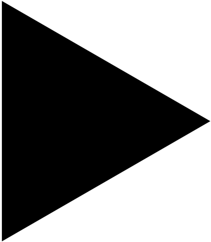

From a mill to a craftperson residency
An artist's residency has been set up in an old mill that has been largely destroyed. The idea was to leave the original brick buildings as they were, and to build a new metal structure inside them. The large central courtyard is now the home of the site: exhibition pavilion, workshop, public and event space. Built in concrete, this new addition follows the pre-existing industrial language but stands out for its monolithic treatment.
The old buildings now house residents' living areas, shops, offices and a cafeteria.
Orange : existing building
gray : intervention
Anatomie de la production du Paris mondialisé
Une résidence d’artisans a été installée dans un ancien moulin en grande partie détruit. Les ruines restent telles quelles, conservées par la consolidation intérieure de la nouvelle structure. La grande cour centrale contient désormais deux structures à la destination volontairement floue : pavillon d’exposition, atelier, espace public et espace événementiel. Construite en béton, cette nouvelle annexe suit le langage industriel préexistant mais se distingue par son traitement monolithique. Une grille tri dimensionnelle construite tel un échafaudage permet une appropriation du lieu, comme une extension qu’il reste a prévoir.
Les anciens bâtiments abritent désormais les espaces de vie des résidents, des commerces, des bureaux et une cafétéria.
Orange : bâtiment existant
gris : intervention

More infosStudent project
2026
Paris and the world
teachers : Emilien Robin, Francoise Fromonot
Plus d'infos
Projet étudiant
2026
Paris et le monde
enseignants : Emilien Robin, Francoise Fromonot